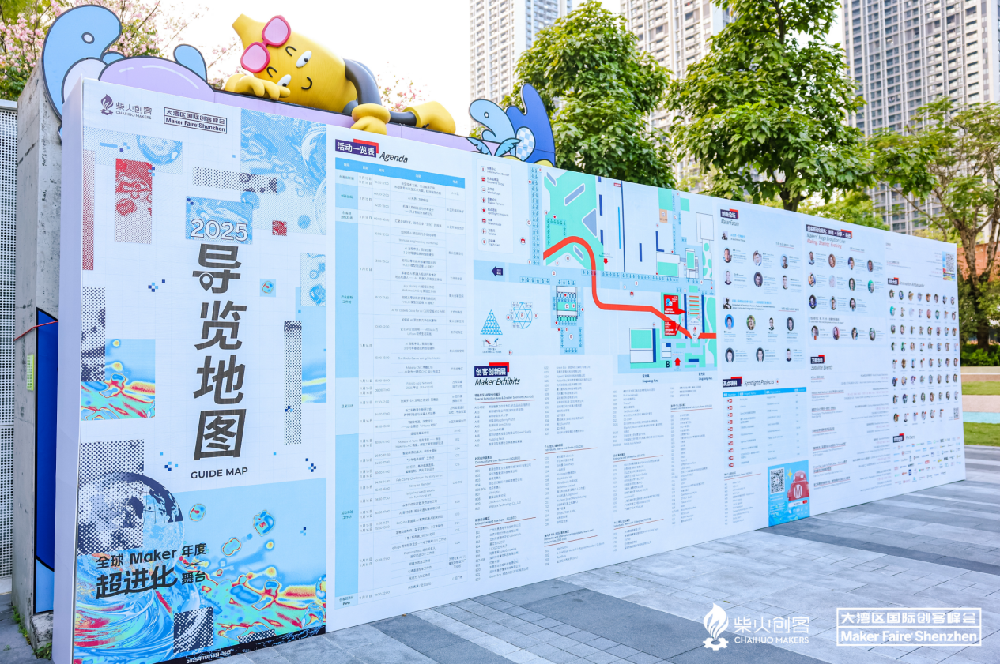
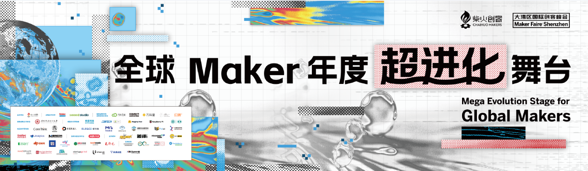
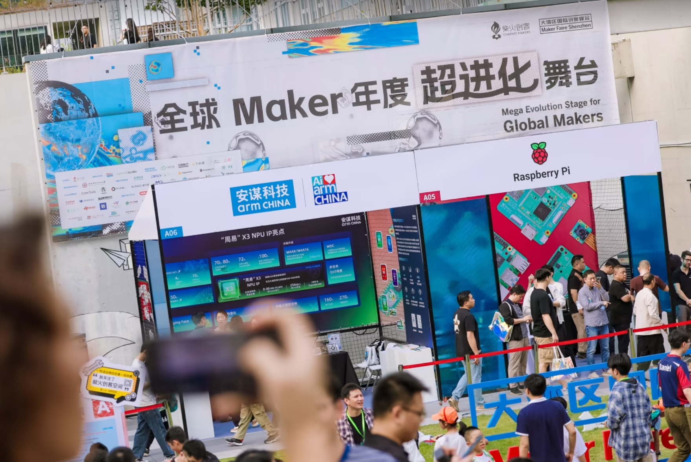

Since 2012, organized by Chaihuo Maker Space — connecting Shenzhen's local hardware ecosystem with the global tech community.
Since its launch in 2012, Maker Faire Shenzhen, organized by Chaihuo Maker Space, has emerged as a key event connecting Shenzhen's local hardware ecosystem with the global tech community. This not only elevates Shenzhen's international standing but also aligns with the Belt and Road Initiative.
The event is a vibrant showcase of the global maker community's tech achievements. With participants from nearly 100 countries, it's become a diverse innovation hub for makers and industry professionals alike.
Maker Faire Shenzhen is a nexus for technology and traditional industries, fostering collaboration and sparking limitless innovation opportunities.

